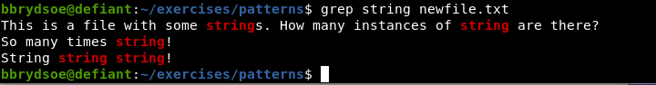
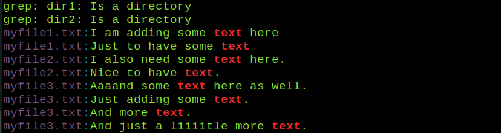
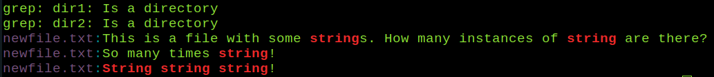
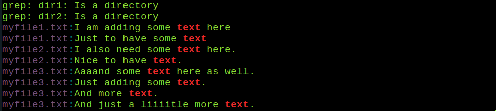
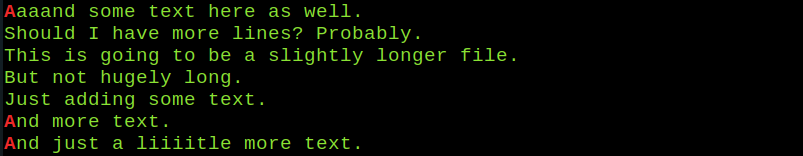
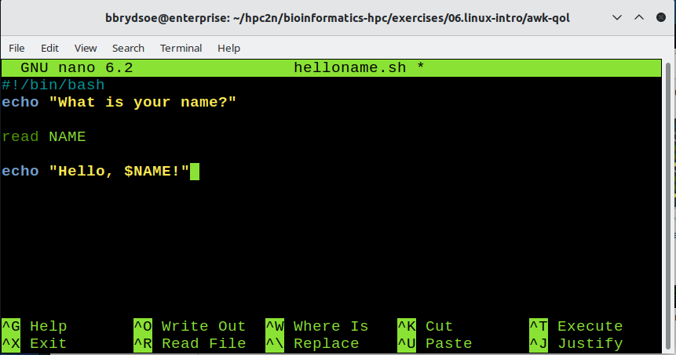
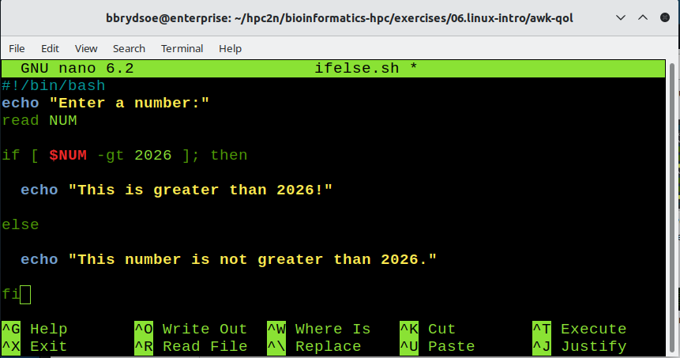

Model solutions for “Extra exercises”¶
Useful files for these examples are found in exercises/06.linux-intro/patterns from the tarball, except for the two last sections which mainly uses exercises/06.linux-intro/awk-qol and exercises/06.linux-intro/script.
Note that many of the exercises have several correct answers.
The Linux File System - Wildcards¶
- Using wildcards, match all file names that begin with
thisfile, followed by one or more numbers, and end with.txt- Answer:
- NOTE: You can test with
ls thisfile?*.txt
- Using wildcards, match all file names with a number in them.
- Answer:
- NOTE: You can test with
ls *[0-9]*
- Using wildcards, match all file names that has a
0in them.- Answer:
- NOTE: You can test with
ls *0*
More about wildcards here: https://hpc2n.github.io/bioinformatics-hpc/06.linux-intro/filesystem/#wild__cards
Modifying the file tree - cp, mv, rm¶
- Create a directory named
bio. Change to the directory. Create two subdirectories. Enter one of them. Create three files (using eithertouchor an editor).- Answer:
- Create another directory, at the same level as the directory named
bio. Copy the files and directories formbiointo your new directory.- Answer:
- Enter your new directory. Create four files. Create a subdirectory. Move the files to the new subdirectory.
- Answer:
- Enter the directory
bio. Rename one of the subdirectories. Create another subdirectory. Remove a file. Remove one of the subdirectories. Try removing one with files in it and one without. What extra option do you need to remove a directory, a directory with files in, and a regular file?- Answer:
- Note: A regular file can be removed with
rm FILE, and to remove a directory you need the option-rtorm. Depending on the settings on your system, you may need options-rftormin order to remove a directory with files in it.
Modifying the file tree - symbolic links¶
- Create a symbolic link in your home directory to the
patternssubdirectory inside the extracted tarball.- Answer:
Data handling - archiving and compressing¶
- Create a tarball containing the
exercises/06.linux-introfiles and directories, but not the exercises from the other sections.- Answer:
- Use
rsyncto transfer files between two of your directories.- Answer:
bash rsync -a dir1/ dir2
- Answer:
Pipes and filters¶
- Using
catand redirect, create a new file namedmyfancyfile.txtwith several lines of text (at least 10 lines). Save it as in the exercise on https://hpc2n.github.io/bioinformatics-hpc/06.linux-intro/pipesfilters/#exercises- Answer:
$ cat > myfancyfile.txt Here I am writing a number of lines There should be at least 10 lines. Let us hope I am inspired. To write a long text file with many lines, you just write and write :) It is going forward. I am writing the sixth line of text. Once upon a time, there was a blue cat with small red boots. This cat liked to walk in snow and rain, which is why it had the boots. Where did it get the boots you may wonder? It had asked a fairy for them, when out on a hunt for mice. The mice had been eating the fairys favourite berries so when the cat caught and ate the mice the fairy gave the cat the choice of a gift and the cat asked for the boots. And now there are more than 10 lines! Success! - Note: I closed and saved the file with CTRL-d (press CTRL and hold while pressing d on the keyboard)
- Answer:
- Use
headandtailto see the first and last few lines of text. - Use
wcto count the number of lines, the number of characters, and the number of words in your file.- Answer:
- Note: To get just the line, use the option
-l. To get just the words, use the option-w. To get just the number of characters, use the option-c
- Use
sortto sort the lines.- Answer:
$ sort myfancyfile.txt And now there are more than 10 lines! Here I am writing a number of lines I am writing the sixth line of text. It had asked a fairy for them, when out on a hunt for mice. The mice had been eating It is going forward. Let us hope I am inspired. Once upon a time, there was a blue cat with small red boots. Success! the cat the choice of a gift and the cat asked for the boots. the fairys favourite berries so when the cat caught and ate the mice the fairy gave There should be at least 10 lines. This cat liked to walk in snow and rain, which is why it had the boots. To write a long text file with many lines, you just write and write :) Where did it get the boots you may wonder? - Note: It would make no difference to add the option
-nfor numerically instead of alphanumerically, since this is not numbers.
- Answer:
Finding patterns¶
- Use pipes to first do
wcon a file and thensortthe output.- Answer:
- In the directory
exercises/06.linux-intro/patterns, usegrepto search for the wordstringand the wordtext. Do the same while adding-ito ignore case.- Answer:




- Answer:
- Standing in the top level directory of exercise directories for the “Introduction to Linux” section (
exercises/06.linux-intro), use find to find all files with the suffix.txt.- Answer:
$ find . -type f -name "*.txt" ./mytestdir/myotherfile.txt ./mytestdir/testdir1/file1.txt ./mytestdir/testdir2/file2.txt ./mytestdir/testdir2/file1.txt ./mytestdir/myfile.txt ./awk-qol/myfile.txt ./script/file.txt ./patterns/thisfile8.txt ./patterns/thisfile2.txt ./patterns/fil.txt ./patterns/thisfile9.txt ./patterns/thisfile3.txt ./patterns/thisfile6.txt ./patterns/myfile3.txt ./patterns/dir1/dir3/fil2.txt ./patterns/dir1/fil3.txt ./patterns/dir1/fil4.txt ./patterns/thisfile4.txt ./patterns/thisfile7.txt ./patterns/newfile.txt ./patterns/myfile1.txt ./patterns/thisfile.txt ./patterns/thisfile1.txt ./patterns/thisfile5.txt ./patterns/myfile2.txt ./patterns/numbers.txt ./patterns/myfiles.txt ./patterns/thisfile0.txt ./patterns/myfile0.txt ./patterns/thisfile10.txt
- Answer:
- Use regular expressions to find all lines in the file
myfile3.txtin theexercises/06.linux-intro/patternsdirectory that has a word starting withAat the beginning of the line.- Answer:

- Answer:
Linux tools: awk¶
The directory exercises/06.linux-intro/awk-qol has two files file.dat and myfile.txt which are useful for these exercises.
- Search for the pattern
omnivorein the filefile.datand print out the line.- Answer:
- Search for the pattern
isin the filemyfile.txtand print out the second column of lines with that pattern.- Answer:
- Note: Look at the file
myfile.txt; you can see that the ‘patternisexists in the last few lines, namely in the wordthis.
- Print column 1 and 4 from file
file.dat, but only those rows that contain the letter ‘v’.- Answer
- Print all lines of
file.datthat has more than 20 characters- Answer:
Scripting¶
- Create a script that greets you when run.
- Create a script that asks for input and does something with it:
- With any editor, open the new file
addinput.sh. - Enter the following into the editor:
- Save and set correct permissions, then run it.
- With any editor, open the new file
- Combine the two programs to create a program that asks for your name and then says
Hello, <your-name>!.- Answer:

- Answer:
- Create a script that uses IF-ELSE to say if a number is less or greater that 2026.
- With any editor, open the new file
ifelse.sh - Save. Set executable permissions. Run the script.
- Answer:

- With any editor, open the new file